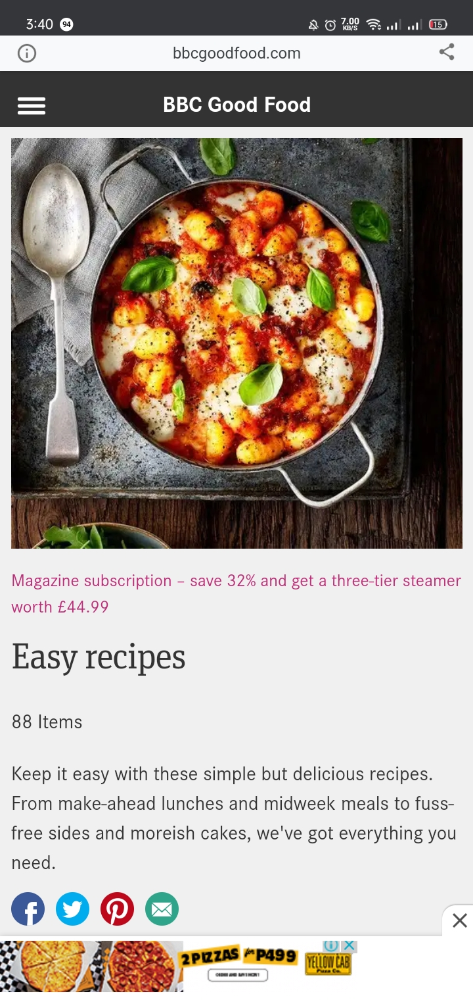
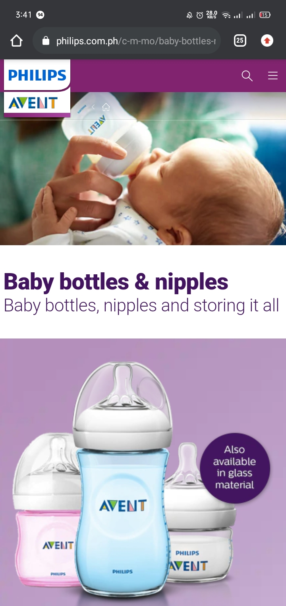

Design Principles
Celestial L. Destacamento
Rule of Thirds
Chevrolet
The photo used by Chevrolet, applied the rule of thirds. The subject are along the points with the nine equal lines. Thereby, draw the viewers eyes to the car, in the most natural way.
Alignment
BBC Good Food
I find this webpage's mobile screen view very organized. The contents were all aligned left (except for its name), which makes it more user friendly, and sophisticated.
Contrast
Phillips Avent
I love the simple contrast in this webpage. The colors complements each other, and what I like the most is, the font style. The texts has the same font style, but the font size and weights makes the contrast more clearer without overdoing the design.